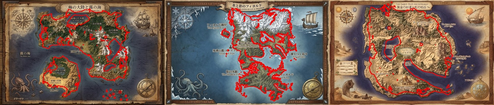

Geminiは地形をどう描き変えたか(地形ごとの比較)
概要: ユーザー指示(2026-11-18)「形から大まかに格子で位置的に同じとみなせばよい。地形との関係は外れるだろうが、地形からできる模様をデフォルメする手法の検証と捉える。山・砂漠・その他」に従い、Geminiの絵を元の地図の位置にそろえて、地形ごとに並べました。最も大きな発見: Geminiの山は、下の地面の色に合わせて色が変わる(砂漠では砂色、氷では白)。私の山は、どこでも同じ灰褐色で、これが「浮く」主因の一つと見えます。
位置合わせ(確認)

絵番号 E042赤線=元の陸の輪郭をGeminiの絵に重ねたもの。世界6・7はよく合い、世界5は一部ずれる。画像の全体を拡大・移動して合わせた(ECC法)。
地形ごとの比べ(左=私の元 / 右=Gemini、位置は同じ)
 絵番号 E043
絵番号 E043目で見て分かったこと(山・砂漠・その他)
- 山: Geminiは、少数の大きな尖った峰を、間隔を空けて描く。左の面が明るく、右が暗い。氷・雪の地域では白い雪の帽子。輪郭は濃いインク線。山のふもとは、周りの地面の色に移っていく(貼り付けの境目がない)。私の山は、円すいが密に積み重なり、どこでも同じ灰褐色で、ふもとが直線に切れている。
- 砂漠: 斜めの砂丘のうねりという模様は、Geminiと私の絵で、ほぼ同じ向きと密度。違いは色で、Geminiは黄橙色で滑らか、私は褐色でやや粗い。デフォルメの量は小さい。
- 森・草原: Geminiは、森を「濃い緑の塊と木の輪」にまとめ(湖の周りに森の輪)、草原は橙色の地面+丘の線の陰影にする。私の絵は、暗い縞の細かい模様だけで、森か草原かの区別が弱い。
- 氷・湿地・ツンドラ: 私の絵は、白と黒のまだら(点の模様)が多く粗い。Geminiは、滑らかな白や灰色の広がりにまとめている。
- 地図の約束ごと: 道の点線、都市の絵、湖畔の森など、元データにない要素を足している。
地形ごとの色と粗さ(数字)
| 地形 | 世界 | Geminiの色(R,G,B) | 私の色(R,G,B) | 細部の粗さ(Gemini) | 細部の粗さ(私) |
|---|---|---|---|---|---|
| 山岳(山の絵の範囲) | 世界5 | 112,101,77 | 99,98,75 | 15.5 | 16.0 |
| 山岳(山の絵の範囲) | 世界6 | 150,152,143 | 152,145,121 | 17.4 | 28.9 |
| 山岳(山の絵の範囲) | 世界7 | 149,119,85 | 113,103,77 | 13.3 | 15.9 |
| 砂漠(熱) | 世界7 | 174,139,99 | 175,147,106 | 14.6 | 17.4 |
| 砂漠(寒) | 世界6 | 134,136,126 | 136,125,99 | 14.3 | 22.1 |
| 砂漠(寒) | 世界7 | 147,116,81 | 135,113,81 | 11.9 | 15.2 |
| サバンナ | 世界5 | 147,114,71 | 95,90,66 | 14.6 | 14.1 |
| サバンナ | 世界7 | 143,113,81 | 113,97,69 | 13.2 | 16.6 |
| 草原 | 世界5 | 126,103,66 | 93,90,65 | 15.0 | 14.1 |
| 草原 | 世界7 | 127,102,72 | 96,90,64 | 11.8 | 14.9 |
| 季節林(熱帯) | 世界7 | 97,80,57 | 58,63,43 | 10.6 | 11.3 |
| 落葉広葉樹林 | 世界5 | 91,83,54 | 75,80,58 | 12.3 | 13.0 |
| タイガ | 世界5 | 67,69,48 | 49,60,44 | 13.6 | 10.4 |
| ツンドラ | 世界5 | 98,84,58 | 96,93,69 | 13.9 | 15.5 |
| ツンドラ | 世界6 | 101,100,81 | 105,100,79 | 11.3 | 18.2 |
| 氷河 | 世界6 | 153,157,153 | 154,147,123 | 16.1 | 34.7 |
| 湿地 | 世界5 | 96,87,57 | 56,65,52 | 13.7 | 14.9 |
| 湿地 | 世界6 | 127,125,99 | 61,63,56 | 11.0 | 16.9 |
| 湿地 | 世界7 | 167,133,96 | 81,65,37 | 14.5 | 52.4 |
地形の内側(縁を10画素除く)の平均。山の絵の範囲は別集計。細部の粗さ=細かい明暗の変化の平均(大きいほどまだらで粗い)。世界ごとに行がある。
数字から読めること
- Geminiの色は、平均すると私の色より赤みが強い(Rが約24、Gが約15、Bが約12高い)。つまり、全体に明るく暖色に寄せている。
- 山の絵の範囲の色: 世界7(砂漠)ではGeminiは橙の褐色(149,119,85)、私は灰褐色(113,103,77)。世界6(氷)ではGeminiは白灰(150,152,143)。山の色が地面の色に従っている。
- 氷河・湿地・ツンドラは、私の絵の細部の粗さが突出して大きく(34.7、52.4など)、Geminiは11〜16でそろっている。まだら模様を、なめらかにまとめている。
デフォルメの手法としての見立て(未検証の案)
- 山の色は、下の地面の色から決める(砂漠→砂色、氷→白、森→緑がかった灰)。ふもとは地面へ移す。
- 粗いまだらを避ける: 氷・湿地・ツンドラは、細かい点でなく、大きな面にまとめる。
- 森は「塊と木の輪」、草原は「明るい地面+丘の線」で、種類の区別を強める。
- 全体を、明るく暖色に寄せる。
これらは、今回の観察からの案です。効果は、まだ試していません。
限界・未確認
- 位置合わせは、拡大と移動による全体の合わせ(相関 0.36〜0.66)で、細かい位置は数画素〜数十画素ずれる。縁を除いた内側で集計して、影響を減らした。
- 世界5・6・7の3枚だけ。地形ごとの行は、面積が十分ある組み合わせだけ。
- 「山の絵の範囲」は私の元データの山岳地帯で、Geminiの山の位置と完全に同じではない。
- 見た印象(山の描き方など)は目視で、数字にしていない。
- Geminiの色の違いには、羊皮紙の色の掛け合わせも混じる(地形だけの効果ではない)。
コード: ecc_gen.py(位置合わせ)/deform_gen.py(地形ごとの比較)。